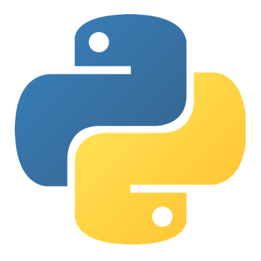
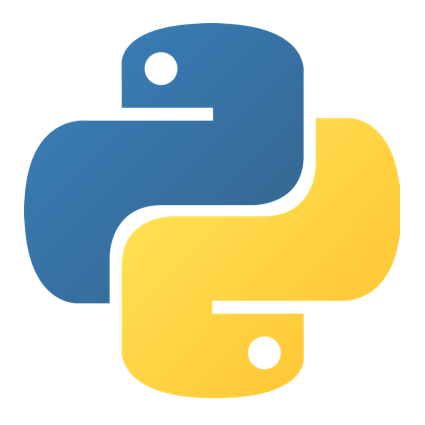
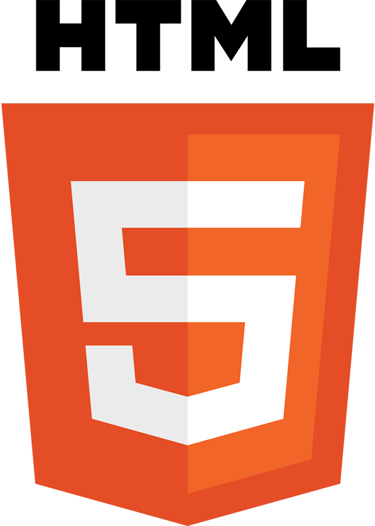
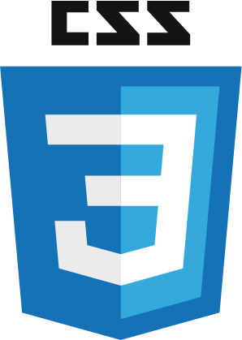
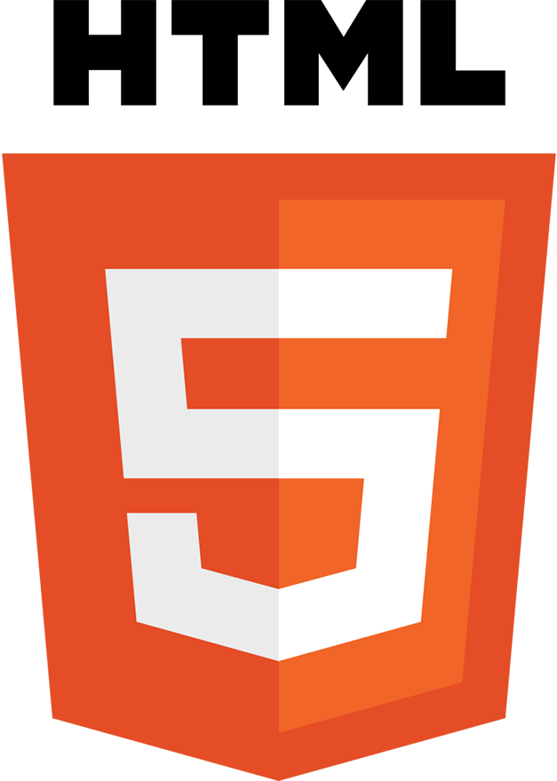
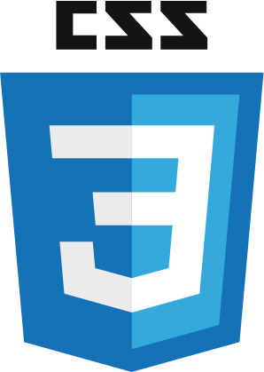

 




About
I always thought programming was very interesting, but never knew where or how to start. As a sophmore in high school, I was given a chance to take AP Computer Science. I really enjoyed the class, and did quite well in it. Afterwards, I started teaching myself other programming languages and frameworks. I enjoy learning new things, and coming up with projects to put my knowledge to use.
Skills
Languages
HTML
Javascript
CSS
Java
PHP
Python
C++
Frameworks + APIs
JDA
THREE.js
JavaFX
Discord Api
SpringBoot
React.js
Featured Project
SWTOR Character and Outfit Designer

Complexity: High
Length: 270+ hours
Status: Beta
Organizations: TORC/Extractors